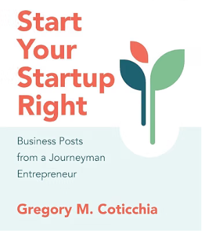

Executive coach · Business leader · Professor
Stuck on a decision that keeps getting bigger?
Greg Coticchia is a six-time CEO, including of a publicly held company, a four-time founder, and Partner at CEO Coaching International. He coaches founders and senior leaders one-on-one, and he will give you a straight read on your situation in a free 30-minute clarity call.
Partner & Executive Coach CEO Coaching International
The first step
A free 30-minute clarity call.
-
01
You name the problem
Bring the decision, stall, or team issue keeping you up. One sentence is enough to start.
-
02
Greg gives you a straight read
He tells you what he sees, what is probably going on underneath, and whether he is the right person to help.
-
03
You leave with a next step
A concrete action you can take this week, whether you work with Greg or not. No pitch, no obligation.
Not ready to book? Talk to Greg 24/7
You can talk to my AI digital twin right now.
It's trained on my coaching, my writing, and 44 years of building companies. It can help you think through a decision tonight and tell you whether a clarity call makes sense.
After the call
From your north star to this week’s priorities.
If we decide to work together, we build a clear line from where your business is going to what you and your team do every week. It starts with a 90-day plan that gives you specifics, not slogans, and a rhythm that turns clarity into results.
-
01
Your north star
Define where your business is ultimately headed, so every decision you and your team make has something to point at.
-
02
An annual plan that gets you there
Turn the north star into this year’s goals, then into 90-day plans with clear priorities and a clear list of what you will stop doing.
-
03
Leading indicators for you and your team
Track the activities that predict success, not just the results that show up too late to change, so you know every week whether the annual plan is on track.
-
04
A rhythm you can keep
Coaching sessions twice a month and quarterly planning that review progress, adjust the plan, and keep you moving toward your north star.
Pittsburgh made
Pittsburgh built steel by showing up and doing the work. Greg builds companies the same way.
Two Pitt degrees, more than 30 years building companies from the Pittsburgh area, and a city’s habit of rolling up its sleeves. No shortcuts, no excuses, just the next thing done well.
About Greg
More than 30 years building technology companies and the people who run them.
Greg is a technology executive, entrepreneur, and academic builder based in the Pittsburgh area. He has served as CEO six times and founded four companies, leading public and private companies from startup through scale-up, with extensive global experience as a software, SaaS, and AI leader. He has participated in 14 startups, helped take Mallet Technology public, and helped launch more than 100 products and solutions. His public-company experience spans both sides of the Atlantic: Duquesne Systems, LEGENT, AXENT, and Symantec on Nasdaq, and Sopheon on the London Stock Exchange.
As CEO and board member of Sopheon (LON: SPE), a publicly traded enterprise innovation software leader, he moved the company to a cloud-native SaaS model, grew annual recurring revenue by 63%, and led the company through a take-private sale to Resurgens Technology at 21x EBITDA. Earlier he sold eBillingHub, his SaaS startup, to Thomson Reuters. Across his exits, the combined value tops $4 billion. Today he is CEO of Joy Metrics, a healthcare workforce analytics company that predicts clinician burnout and improves retention, and a Partner and Executive Coach at CEO Coaching International, where he served as the firm's first Chief Product Officer and led its BIG Intelligence AI coaching platform.
-
Early career
Engineering and software
Began with a B.S. in Industrial Engineering and an MBA from the University of Pittsburgh, then spent his early career as an executive at Nasdaq-listed software companies: Duquesne Systems, which merged to form LEGENT (later acquired by CA), and AXENT, which Symantec acquired. Both Pitt schools later gave him their Distinguished Alumni Award.
-
Leadership
Six CEO roles, public and private
Founded four companies and led public and private companies from startup through scale-up. Helped take Mallet Technology public, served as CEO of London-listed Sopheon, raised more than $73 million in venture capital, and was directly involved in more than 28 mergers and acquisitions.
-
Today
Coach, CEO, professor
Leads Joy Metrics and serves as a Partner and executive coach at CEO Coaching International. A professor for more than 20 years, at the University of Pittsburgh, Carnegie Mellon, and Duquesne.
How Greg works
A simple loop that turns stuck into moving.
- 01
Clarify the real problem
Separate the symptom from the decision underneath it.
- 02
Decide what to stop
Choose the few moves that matter and name what gets dropped.
- 03
Align the people
Build the feedback rhythm and shared language a team needs to act.
- 04
Act and review
Ship the next step this week, then measure and adjust every quarter.
In pictures
Coaching rooms, classrooms, and boardrooms.
Coaching
Who Greg works with, and what changes.
Greg doesn’t just coach technology companies. His clients range from small consumer products and woodworking companies to large nonprofit trade associations that are more than 100 years old. Whatever the size or industry, the focus is the same: breaking through the challenges that stand in the way so the organization can grow and scale.
-
01
Founders and CEOs
Sharpen strategy, decide what to stop doing, and handle the pressure of the seat you are in.
-
02
Executive teams
Build the rhythm, feedback, and trust that let a team move without you in every room.
-
03
Leaders in transition
Navigate a promotion, a pivot, or a hard change with a plan you can act on this quarter.
Coaching outcomes
What clients come to Greg to change, and where he has done it himself.
Clients bring Greg the problems he has already solved from the CEO seat. The coaching aims at a result you can measure, and every one of these he has delivered in his own companies first.
-
Get the company ready to sell
Tighten the story, the numbers, and the team so buyers see a business worth a premium, then run the process without losing the quarter.
Done it himselfAs CEO of publicly held Sopheon, led its take-private at 21x EBITDA, sold eBillingHub to Thomson Reuters, and took part in more than 28 mergers and acquisitions.
-
Grow recurring revenue
Move a product business toward subscription revenue, decide what to stop selling, and build the operating rhythm that keeps growth predictable.
Done it himselfMoved Sopheon to a cloud-native SaaS model and grew annual recurring revenue by 63%.
-
Raise money and launch what is next
Shape the pitch, pick the right investors, and turn a funding round into products that reach customers.
Done it himselfRaised more than $73 million in venture capital, worked in 14 startups, and launched more than 100 products and solutions.
AI and leadership
Helping CEOs put AI to work, from someone who has been building it since the 1980s.
Greg built his first AI product, ARGUS, a machine vision system for quality inspection, in the late 1980s, long before AI showed up on every board agenda. In the late '80s and early '90s, he also built Automate for IBM operating systems, which helped run lights-out data centers using expert systems and rule-based systems, the early precursors to today's modern artificial intelligence. As CEO Coaching International's first Chief Product Officer, he led BIG Intelligence, the firm's AI-powered coaching initiative for coaches and their CEO clients. He also hosts Make BIG Happen with AI, a monthly roundtable where the CEOs he coaches compare notes on what is actually working in their companies.
- Late 1980s
ARGUS
Machine vision for quality inspection on the factory floor.
- Late '80s – early '90s
Automate
Expert and rule-based systems that ran lights-out IBM data centers.
- 2026
BIG Intelligence
AI-powered coaching platform for coaches and their CEO clients.
- Today
Make BIG Happen with AI
Monthly roundtable where CEOs compare what is actually working.
-
01
Find the real return
Separate the AI projects that move revenue and margin from the ones that only make good demos.
-
02
Put agents to work
Go beyond chatbots to agents that do real work, from logging calls to preparing the daily brief.
-
03
Rebuild, do not bolt on
Redesign the process around what AI can do instead of adding a tool to a workflow that was already broken.
Keynote speaking
Put Greg in front of your team.
Suggested topics
Pick one, or tell Greg what your audience needs and he will build the talk around it.
Leadership teams
- Unlocking scale: what changes when the CEO stops being the bottleneck
- Putting AI to work: from good demos to real returns
- Building the senior team you actually need
- Strategy that survives contact with the quarter
- Getting the company ready to sell
Conferences, podcasts and media
- Forty years of AI, from machine vision in the 1980s to agents today
- Six times a CEO: what I would tell my first-time self
- Start your startup right
- Inventing the world's first product management degree
- What buyers really pay for in an exit
In clients' words
“I think a lot of the coaching you’re doing is working… The company is already operating better… The team is saying that they can feel it and see the difference… We’re acting like a normal, healthy company now.”
“Thank you so much for being my coach this year. It was really a pleasure.”
“Probably the best kickoff meetings I have participated in.”
“You’re asking the right questions and pushing me in the right direction… my tremendous thanks to you, Greg.”
“I really appreciate your Socratic approach to coaching… I really find it reflective and engaging.”
“That became somehow my mantra, so I reviewed it over and over again.”
“I like the clarity of… the specific actions and how I can show up for the team. I think that really gives me some grounding and also gives me some clear direction.”
“Guiding me to make decisions I don’t naturally want to make on my own, and quickly… you’re darn good at it and your impact really makes a difference.”
Track record
Track record, in numbers.
- Combined exit value
- $4B+
- Venture capital raised
- $73M+
- Products and solutions launched
- 100+
Teaching
Founder of the world's first product management degree.
Greg designed and launched Carnegie Mellon University's Master of Science in Product Management (MSPM) and served as its founding executive director, the first formal degree dedicated entirely to product management. He taught in the program for several years.
At the University of Pittsburgh he was the founding director of The Blast Furnace, the student startup accelerator, and the university's first Executive in Residence for software and IT. He taught B2B marketing and entrepreneurship there for more than 20 years, at both the undergraduate and graduate level. He also taught entrepreneurship in the leadership school at Duquesne University.
- Affiliation
Partner and Executive Coach, CEO Coaching International; formerly the firm's first Chief Product Officer
- Certifications
ICF-certified executive coach; STS Exit Planning; certified in DISC and Predictive Index; certificates in Professional Coaching (Duquesne) and Entrepreneurial Management (CMU); coaches with the Make BIG Happen methodology
- Education
B.S. in Industrial Engineering and MBA, University of Pittsburgh
- Board service
Independent director and board member, including NFR Security (Check Point), Four Rivers Software (Accruent), AXIOM, PDMA, and Sopheon (LON: SPE)
- Book
Author of Start Your Startup Right, a startup playbook
- Recognition
Distinguished Alumni Award, University of Pittsburgh Swanson School of Engineering; Distinguished Alumni Award, Joseph M. Katz Graduate School of Business; three-time finalist, Ernst & Young Entrepreneur of the Year

The book
Start Your Startup Right
Business posts from a journeyman entrepreneur: practical lessons on building, funding, and leading a startup, written from more than 30 years in the seat.
Read the book on Amazon“I read it in, like, a day… Yours was just no nonsense. It was easy to read and really, really valuable.”
Free course
Unlocking Scale as a CEO.
Not ready for coaching yet? Start with Greg’s free online course on Udemy. In under two hours, it covers the personal, human, and financial essentials CEOs and founders need to move a business from growth to scale, starting with an honest look at your own leadership.
-
01
The scaling mindset
How a scaling business differs from a lifestyle or growth business, and how to tell whether you are ready.
-
02
The right people in the right seats
Make better hiring decisions as a CEO and build a culture that can carry the company to the next stage.
-
03
The numbers and the money
The KPIs and financial scorecards of scaling, plus the main funding options and their trade-offs.
Insights
What Greg is writing about.
Greg writes regularly for CEOs and leadership teams on LinkedIn. A few of the ideas readers ask him about most:
-
AI
Why AI is failing in your company, and it's not the technology
Most companies are paving the cow path: dropping AI on top of the way work already happens, then wondering why nobody uses it six months later. The organizations that get a return redesign the process first, measure outcomes instead of logins, and treat governance as a way to move faster, not a way to say no.
-
Leadership
You get the year you allocate time to
Every leadership team starts the year with priorities, and most never look at them again. Put your calendar next to your plan and the gap shows up fast. Greg's simple exercise uses AI to sort where your time actually went, then asks whether it matches what you said mattered most.
-
Execution
"To listen" is not a meeting outcome
Too many meetings exist to sync, align or listen. Those are activities, not results. Greg's four-question test helps leaders decide whether a meeting deserves to exist at all, and what it has to produce if it does.
-
Coaching
The worst coaching question I've ever heard
There is a difference between a hard question and a loaded one. Hard questions help a leader see what they've been avoiding. Loaded questions steer them toward the coach's answer and quietly destroy trust. What to look for, and what to avoid, when you choose a coach.
Free download
The CEO Scaling Checklist.
Twenty-five questions that show whether your company is ready to move from growth to scale, across five areas: you as CEO, your people, your plan and rhythm, your numbers, and your money and exit. It takes ten minutes, and the boxes you leave empty show you where growth will break first.
- Built from Greg's free course, Unlocking Scale as a CEO
- A simple score that tells you what to fix first
- Two pages you can print and bring to your next leadership meeting
Questions
What clients ask before they start.
How long do engagements last?
Most clients work with Greg for multiple years, but every engagement is month to month. You stay because it is working, not because a contract says you have to.
How often do we meet?
Twice a month, for 90 minutes each session, plus quarterly planning sessions that review the plan and set the next 90 days.
Is it virtual or in person?
Most coaching happens virtually. Planning sessions and quarterly reviews are held in person.
Is this consulting?
No. A consultant hands you answers. Coaching is about getting the best out of you so you make the best decisions you can, for your company and your team. That is Greg's job as your coach.
Book your clarity call
What is the decision you are stuck on?
Pick a time that works for you and bring the decision, stall, or team issue you want to talk through. The call is free, 30 minutes, and comes with no pitch. You can also reach Greg directly at GregCoticchia@ceocoaching.com, or talk to Greg's AI digital twin any time, day or night.
Pick a time below. You'll get a confirmation and calendar invite right away.
Calendar not loading? Open Greg's calendar in a new tab.